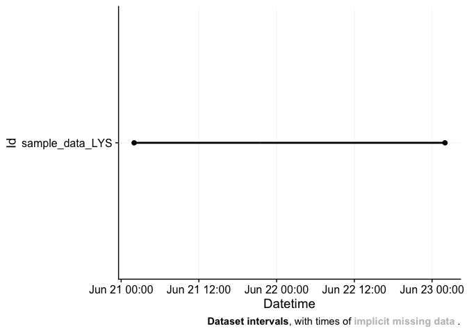
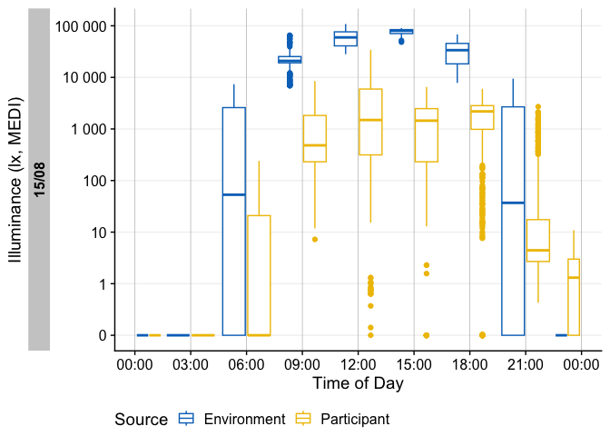

Personalized luminous exposure data is progressively gaining importance in various sectors, including research, occupational affairs, and fitness tracking. Data are collected through a proliferating selection of wearable loggers and dosimeters, varying in size, shape, functionality, and output format. Despite or maybe because of numerous use cases, the field lacks a unified framework for collecting, validating, and analyzing the accumulated data. This issue increases the time and expertise necessary to handle such data and also compromises the FAIRness (Findability, Accessibility, Interoperability, Reusability) of the results, especially in meta-analyses.
LightLogR is a package under development as part of the MeLiDos project to address these issues. The package aims to provide tools for:
import from common measurement devices (see below for a list of supported devices)
Validation and processing of light logging data
Visualization of light exposure data, both exploratory and publication ready
Calculation of common analysis parameters (see below for a list of metrics)
To come:
Import, creation, and verification of crucial metadata
Semi-automated analysis and visualization (both command-line and GUI-based)
Integration of data into a unified database for cross-study analyses
Please note that LightLogR is work in progress! If you are interested in the project and want to know more, you can subscribe to the LightLogR mailing list. If you find a bug or would like to see new or improved features, please open an issue on the GitHub repository.
Have a look at the Example section down below to get started, or dive into the Articles to get more in depth information about how to work with the package and generate images such as the one above, import data, visualization, and metric calculation.
Supported devices
At present, these are the devices we support in LightLogR:
Actiwatch_Spectrum
Actiwatch_Spectrum_de
ActLumus
ActTrust
Circadian_Eye
DeLux
GENEActiv_GGIR
Kronowise
LiDo
LightWatcher
LIMO
LYS
MotionWatch8
nanoLambda
OcuWEAR
Speccy
SpectraWear
VEET
More Information on these devices can be found in the reference for import_Dataset(). If you want to know how to import data from these devices, have a look at our article on Import & Cleaning.
If you are using a device that is currently not supported, please contact the developers. We are always looking to expand the range of supported devices. The easiest and most trackable way to get in contact is by opening a new issue on our Github repository. Please also provide a sample file of your data, so we can test the import function.
Metrics
LightLogR supports a wide range of metrics across different metric families. You can find the full documentation of metrics functions in the reference section. There is also an overview article on how to use Metrics.
| Metric Family | Submetrics | Note | Documentation |
|---|---|---|---|
| Barroso | 7 | barroso_lighting_metrics() |
|
| Bright-dark period | 4x2 | bright / dark | bright_dark_period() |
| Centroid of light exposure | 1 | centroidLE() |
|
| Disparity index | 1 | disparity_index() |
|
| Duration above threshold | 3 | above, below, within | duration_above_threshold() |
| Exponential moving average (EMA) | 1 | exponential_moving_average() |
|
| Frequency crossing threshold | 1 | frequency_crossing_threshold() |
|
| Intradaily Variance (IV) | 1 | intradaily_variability() |
|
| Interdaily Stability (IS) | 1 | interdaily_stability() |
|
| Midpoint CE (Cumulative Exposure) | 1 | midpointCE() |
|
| nvRC (Non-visual circadian response) | 4 |
nvRC(), nvRC_circadianDisturbance(), nvRC_circadianBias(), nvRC_relativeAmplitudeError()
|
|
| nvRD (Non-visual direct response) | 2 |
nvRD(), nvRD_cumulative_response()
|
|
| Period above threshold | 3 | above, below, within | period_above_threshold() |
| Pulses above threshold | 7x3 | above, below, within | pulses_above_threshold() |
| Threshold for duration | 2 | above, below | threshold_for_duration() |
| Timing above threshold | 3 | above, below, within | timing_above_threshold() |
| Total: | |||
| 17 families | 61 metrics |
If you would like to use a metric you don’t find represented in LightLogR, please contact the developers. The easiest and most trackable way to get in contact is by opening a new issue on our Github repository.
About the creation and funding of LightLogR
LightLogR is developed by the Translational Sensory & Circadian Neuroscience lab, a joint group from the Technical University of Munich and the Max Planck Institute for Biological Neuroscience Unit (MPS/TUM/TUMCREATE)*, a joint group based at the Technical University of Munich, TUMCREATE, the Max Planck Institute for Biological Cybernetics.
MeLiDos is a joint, EURAMET-funded project involving sixteen partners across Europe, aimed at developing a metrology and a standard workflow for wearable light logger data and optical radiation dosimeters. Its primary contributions towards fostering FAIR data include the development of a common file format, robust metadata descriptors, and an accompanying open-source software ecosystem.

The project (22NRM05 MeLiDos) has received funding from the European Partnership on Metrology, co-financed from the European Union’s Horizon Europe Research and Innovation Programme and by the Participating States. Views and opinions expressed are however those of the author(s) only and do not necessarily reflect those of the European Union or EURAMET. Neither the European Union nor the granting authority can be held responsible for them.
Installation
You can install LightLogR from CRAN with:
install.packages("LightLogR")You can install the latest development version of LightLogR from GitHub with:
# install.packages("devtools")
devtools::install_github("tscnlab/LightLogR")Example
Here is a quick starter on how do use LightLogR.
library(LightLogR)
#these packages are needed for the examples as shown below.
library(flextable)
library(dplyr)
library(ggplot2)Import
You can import a light logger dataset with ease. The import functions give quick, helpful feedback about the dataset.
filename <- system.file("extdata/sample_data_LYS.csv", package = "LightLogR")
dataset <- import$LYS(filename, tz = "Europe/Berlin")
#>
#> Successfully read in 11'422 observations across 1 Ids from 1 LYS-file(s).
#> Timezone set is Europe/Berlin.
#>
#> First Observation: 2023-06-21 02:00:12
#> Last Observation: 2023-06-23 01:59:48
#> Timespan: 2 days
#>
#> Observation intervals:
#> Id interval.time n pct
#> 1 sample_data_LYS 15s 10015 87.689%
#> 2 sample_data_LYS 16s 1367 11.969%
#> 3 sample_data_LYS 17s 23 0.201%
#> 4 sample_data_LYS 18s 16 0.140%
dataset %>% ungroup() %>% select(Datetime, lux, kelvin, MEDI) %>%
slice(8000:8005) %>% flextable() %>% autofit()
.
For more complex data, there is the useful gg_overview() function to get an immediate grasp of your data. It was automatically called during import (set auto.plot = FALSE to suppress this), but really shines for datasets with multiple participants. It also indicates where data is missing, based on the measurement epochs found in the data.
note: the above example image requires a large dataset not included in the package. It is available, however, in the article on Import & cleaning.
Visualize
Once imported, LightLogR allows you conveniently visualize the data.

There is a wide range of options to the gg_day() function to customize the output. Have a look at the reference page (?gg_day) to see all options. You can also override most of the defaults, e.g., for different color, facetting, theme options.

More than one dataset
The built-in dataset sample.data.environment shows a combined dataset of light logger data and a second set of data - in this case unobstructed outdoor light measurements. Combined datasets can be easily visualized with gg_day(). The col parameter used on the Id column of the dataset allows for a color separation.
sample.data.environment %>%
gg_day(
start.date = "2023-09-01",
aes_col = Id,
scales = "fixed",
geom = "line") + theme(legend.position = "bottom")
#> Only Dates will be used from start.date and end.date input. If you also want to set Datetimes or Times, consider using the `filter_Datetime()` function instead.
If you want to get a feeling for the data over the course of multiple days, the gg_days() function comes in handy. It works similar to gg_day(). It is also opinionated in terms of the scaling and linebreaks to only show whole days, all of which can be adjusted.

With the cut_Datetime() function, the data can further be broken up into arbitrary time intervals. This can be used to easily compare different datasets. Just put the function in between the dataset and gg_day(). This makes a new variable available for plotting: Datetime.rounded. Just make sure, that the geom parameter is set to boxplot and the group parameter uses both the info from the rounded time interval (Datetime.rounded) and the different datasets (Source). The base::interaction() function can easily combine them. The default interval for cut_Datetime() is 3 hours.
sample.data.environment %>%
cut_Datetime() %>%
gg_day(
end.date = "2023-08-29",
aes_col = Id,
scales = "fixed",
geom = "boxplot",
group = interaction(Id, Datetime.rounded)) +
theme(legend.position = "bottom")
#> Only Dates will be used from start.date and end.date input. If you also want to set Datetimes or Times, consider using the `filter_Datetime()` function instead.
Insights, Validation, and Processing
LightLogR provides a range of functions to get insight into your light logger data. Most importantly, you can search for and eliminate implicit gaps.
dataset %>% gap_finder()
#> Found 10758 gaps. 761 Datetimes fall into the regular sequence.The huge amount of gaps comes from the fact that the measurement intervals are somewhat irregular between 15 and 18 seconds in this case. This leaves very little intervals to start regularly. We got this information after import, but can still get to this info through count_difftime().
dataset %>% ungroup() %>% count_difftime()
#> # A tibble: 4 × 2
#> difftime n
#> <Duration> <int>
#> 1 15s 10015
#> 2 16s 1367
#> 3 17s 23
#> 4 18s 16We can eliminate this through the gap_handler() function. This function will automatically fill in the gaps with NA values. As the most dominant interval in the dataset is now not 15 seconds anymore (because intermediate datapoints have been added), we need to specify the epoch for gap_finder().
dataset %>% gap_handler() %>% gap_finder(epoch = "15 sec")
#> No gaps foundIf we want to force the data to be regular, we can use the aggregate_Datetime() function. This will aggregate the data to the specified epoch. There are sensible defaults on how to aggregate numeric, categorical, and logical data. You can also specify your own aggregation functions.
dataset %>% aggregate_Datetime(unit = "15 sec") %>% gap_finder()
#> Found 97 gaps. 11422 Datetimes fall into the regular sequence.Now, very few gaps are left (every time the the lagged epochs lead to a completely skipped regular epoch). The function can also be used to conveniently change the interval to arbitrary values, e.g., "5 mins", or "1 hour".
I Want To Contribute
All types of contributions are encouraged and valued. See the CONTRIBUTING section for different ways to help and details about how this project handles them. This project and everyone participating in it is governed by the LightLogR Code of Conduct.